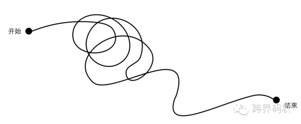
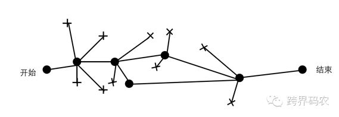
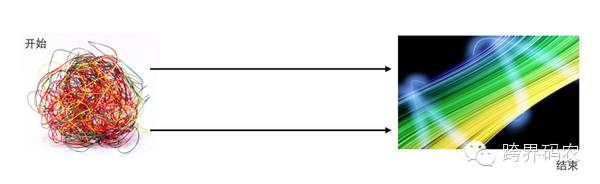

新时代的前端架构
卓文理
卓文理
19XX ~ 2005
HTML
CSS
JavaScript
前端？这个时期哪来的前端？ (╯°口°)╯(┴—┴
2005 ~ 2013
HTML5要到2014年才能用，这辈子估计都用不到它了！！ (╯°口°)╯(┴—┴
熟知的库：
由淘宝带头而兴起了 UED（User Experience Design）。UED 包含设计、交互、开发。
前端开发的主流人员基本上是开发转行，或是设计出生。由于对该领域的陌生，也有很多人都缺乏传统的编程经验，像HTML、css、JavaScript（以及jQuery）这些技能，基本上都是靠自学成才的。此时开发工作只包含页面重构，不写后端模板。
衡量一个合格的前端：能否搞定IE6，以及完成跨浏览器的完美显示。
前端现成可用资源缺乏，网上连个像样组件都没有，所以前端重点及难点以 JS库/框架/组件 构建为主。
前端库日渐成熟，加之 UED 阶段技术栈薄，与后端沟通成本高等问题，也随着前端从业人员逐渐增多。前端除页面重构外，还包括写后端的模板，这样一来，离真正的研发系统（逻辑而非界面）更近，JS 库与框架选型越来越趋向统一，真正开始多端发展。
我们的目光正在从对前端的细枝末节的关注转移到对于工具的关注，这就对前端开发者提出了一系列新的要求。那些认为这些要求理所应当并开始接受新知识的人，就足以把那些安于现状的开发者们甩出几条街了。
2013++
html5
css3
NodeJS
PhoneGap
| SVG | Canvas | 存储、定位、Worker、语义化... |
|---|---|---|
| D3.js 、 Snap.svg... | Cocos2d-js 、 three.js 、 React Canvas... | localStroage Application Cache <article> <section>... |
PostHTML 之于 HTML，就像 PostCSS 之于 CSS。
<html>
<body>
<article class="my-article">
<h1>Hello "world"...</h1>
<p>
The three wise monkeys [. . .] sometimes called the three mystic apes--are a pictorial maxim.
Together they embody the proverbial principle to ("see no evil, hear no evil, speak no evil").
The three monkeys are Mizaru (:see_no_evil:), covering his eyes, who sees no evil;
Kikazaru (:hear_no_evil:), covering his ears, who hears no evil;
and Iwazaru (:speak_no_evil:), covering his mouth, who speaks no evil.
</p>
</article>
</body>
</html>
在段落中包含了一些 emoji 表情的文本表示，比如:speak_no_evil:等。如何将其换成可在网页上直接显示的表情呢？
我们可以借助 PostHTML 的插件PostHTML-Retext来实现：
var fs = require('fs'),
posthtml = require('posthtml'),
html = fs.readFileSync('path/to/file.html');
posthtml()
.use(require('posthtml-retext')([
[require('retext-emoji'), { convert: 'encode' }], // Array if plugin has options
require('retext-smartypants')
]))
.process(html)
.then(function(result) {
fs.writeFileSync('path/to/file.html');
})
<html>
<body>
<article class="my-article">
<h1>Hello “world”…</h1>
<p>
The three wise monkeys […] sometimes called the three mystic apes—are a pictorial maxim.
Together they embody the proverbial principle to (“see no evil, hear no evil, speak no evil”).
The three monkeys are Mizaru (🙈), covering his eyes, who sees no evil;
Kikazaru (🙉), covering his ears, who hears no evil;
and Iwazaru (🙊), covering his mouth, who speaks no evil.
</p>
</article>
</body>
</html>
var gulp = require('gulp');
var posthtml = require('gulp-posthtml');
var retext = require('posthtml-retext');
var emoji = require('retext-emoji');
var smartypants = require('retext-smartypants');
gulp.task('html', function() {
return gulp.src('*.html')
.pipe(posthtml(retext([[emoji, {convert: 'encode'}], smartypants])))
.pipe(gulp.dest('build/'));
});
gulp.task('default', ['html']);
熟知的库：
| Less | Sass | Stylus | |
|---|---|---|---|
| 环境 | js/nodejs | Ruby | nodejs |
| 扩展名 | .less | .scss/.sass | .styl |
| 特点 | 老牌，支持js解析 | 功能全、强大，有成型框架，发展快 | 语法多样，小众 |
| 框架 | Bootstrap | Compass、Bootstrap、Foundation Base.Sass |
@mixin table-scaffolding {
th {
text-align: center;
font-weight: bold;
}
td, th { padding: 2px; }
}
@mixin left($dist:2px) {
float: left;
margin-left: $dist;
}
#data {
@include left(10px);
@include transition(all 0.3s ease);
@include table-scaffolding;
}
#data{
float: left;
margin-left: 10px;
-webkit-transition: all 0.3s ease;
-moz-transition: all 0.3s ease;
transition: all 0.3s ease;
}
#data th {
text-align: center;
font-weight: bold;
}
#data td, #data th {
padding: 2px;
}
熟知的库：
CommonJS就是为JS的表现来制定规范。因为js没有模块的功能，所以CommonJS应运而生。它希望js可以在任何地方运行，不只是浏览器中。
Node，CommonJS，浏览器以及W3C之间的关系
|------------浏览器-----------| |--------------CommonJS----------------|
| BOM | | DOM | | ECMAScript | | FS | | TCP | | Stream | Buffer | |...|
|-----W3C-----| |------------------------Node-------------------------|
AMD、CMD
它就主要为前端JS的表现制定规范。
究竟是什么原因，驱使我们去使用这么多的工具呢？
曾经
参加过一个
前端分享
我问他说
为什么你选择了这个工具
而没有选择
另外一个工具呢
他说觉得适合我嘛
我问那为什么适合你的呢
他说就是适合我嘛
然后这个问题
就无疾而终了
以前我
连说话
都说不利索
可是
自从有了
回车键
我居然
就成了一个
诗人
很多时候如果我们去看前端做的一些工程类的事情，其实是需要这样的追问的。我们在这个方面本身思考的并不够多，而前端本身在这个方面的时间也不是很长。从05年算起的话到现在也才10年，跟整个的软件工程比起来的话我们还很年轻。它里面有很多问题我们现在可能是不知道的.
而且前端处在一个特殊的位置上，它和普通的开发还是有很大的区别的。在整个开发链条上，它处于一个很大的交叉领域中，受到各方面的影响。与设计师，与产品，与后端，与客户端等等，上下左右前后都要考虑，当然这是我站在前端的角度说的。
回到刚刚那个问题，选择一个工具，有很多前提条件，比如团队的构成，组织结构，你的开发流程和你的各种能力。如果我们不把这个前提讲出来的话，单纯因为说这个工具好，这是废话，甚至可能是错误的。

线性解决问题。

擅长解决某领域问题并少走弯路。

梳理多维问题和信息，进行框架设计实现需求，找到问题切入点，并可让专家们在其领域能力得以施展。
我们把前后端差异，前端与客户端差异，以及工程师本质，围绕前端领域里的核心问题域梳理下，我认为前端问题域总结起来有以下3点：
前端针对用户，后端针对机器。这是领域间最大的差异之一。前端界面相关，用户体验相关的核心技术可扩展至「性能」、「图形」、「文本」3 大方面。
提高开发效率是「前端工程」的核心。
前端架构薄，在面对流量等等技术的架构上并无明显差异。但是，对「协作」的要求更高，现在所说的模块化，工程化，工具化，MV** 之类都是解决此问题。
「端」的架构模式类似，但 Web 端与客户端之间仍有不同。客户端把静态资源打包到 App 里，而 Web 端是通过中间 CDN 与 HTTP 网络的加载，所以，如何优化静态资源（HTML/CSS/JS）加载方式在架构中权重也占很大一部分。